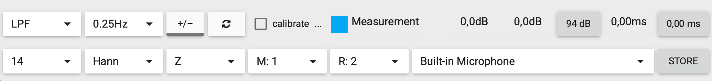
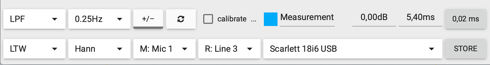

A barra inferior é onde mora a configuração mais importante da medição. Cada botão ali decide algo sobre como o OSM processa o sinal — e nenhuma medição séria começa sem você passar por todos eles, pelo menos uma vez.
As duas fileiras
A barra é dividida em duas linhas. A de cima cuida do tratamento da medição (filtros, average, calibração). A de baixo cuida do setup técnico (FFT, janela, canais, dispositivo).


Fileira de cima: tratamento da medição
- Filtro (LPF / HPF) Por padrão fica em LPF (low-pass filter — filtro passa-baixa). Aplica um filtro no average da medição, suavizando flutuações rápidas. Deixe em LPF.
- Frequência de average (0.25Hz) Define o quão "lento" o average reage a mudanças. 0.25Hz é o padrão e funciona para a maioria dos casos — a medição leva alguns segundos para estabilizar mas fica muito limpa. Suba para mudanças mais rápidas (1Hz, 10Hz), abaixe para mais suavidade.
- Polaridade (+/-) Inverte a polaridade da medição. Use para teste rápido: ver como ficaria a curva se a caixa estivesse com polaridade invertida.
- Refresh (ícone de seta circular) Reseta o average e começa do zero. Use quando você muda algo no sistema (move um cabo, troca de microfone) e quer que o average esqueça o que viu antes.
- Calibrate Checkbox para entrar em modo de calibração de SPL. Ao marcar, o OSM vira medidor de pressão sonora calibrado. Você precisa de um calibrador externo (que gera 94 dB ou 114 dB de referência) para calibrar de fato. Sem calibrador, deixe desmarcado — os valores em dB serão relativos, não absolutos.
- Identificador da medição (Measurement com bolinha colorida) Mostra qual medição os campos de gain/delay à direita estão controlando. Clica para escolher outra.
- Gain (0,0dB) Ganho aplicado pelo OSM na curva da medição selecionada. Útil para deixar duas medições na mesma altura no gráfico (subtraindo o offset entre elas).
- Delay manual (5,40ms) Atraso aplicado manualmente. Quando o OSM calcula o delay automaticamente (pelo botão de delay finder), o valor aparece aqui.
- SPL de referência (94 dB) Nível do calibrador. 94 dB é o padrão da maioria dos calibradores de mercado. Se o seu gera 114, mude para 114.
- Delay aplicado / Estimado Os campos finais mostram o atraso aplicado e o atraso estimado pelo delay finder.
Fileira de baixo: setup técnico
- FFT Power (14 ou LTW) Controla o tamanho da janela FFT. Valor 14 = 2^14 = 16.384 amostras. Mais alto = mais resolução nas frequências graves, mas resposta mais lenta. Para alinhamento de igreja, 13-15 funciona bem. LTW ativa a janela log-time-weighted (resolução variável, melhor para sistemas reais). Veja Infográfico 05 sobre FFT.
- Janela (Hann) Tipo de janela aplicada na FFT. Hann é o padrão e quase ninguém precisa mudar. Outras opções (Hamming, Blackman, etc) só interessam em casos específicos.
- Smoothing (Z, Notch) Suavização do gráfico. Z é "sem suavização", mostra todos os detalhes. Notch aplica filtro que destaca picos estreitos (microfonia). Outras opções: 1/3, 1/6, 1/12 de oitava para suavização progressiva. Setup recomendado: comece em 1/6 ou 1/12 para ver "a forma" da resposta sem ruído.
- Canal M (microfone) (M: 1 ou M: Mic 1) Canal de entrada onde está o microfone de medição. Em interface profissional aparece o nome do canal (Mic 1); em mic embutido aparece só o número.
- Canal R (referência) (R: 2 ou R: Line 3) Canal de entrada onde está a referência (sinal antes de entrar na caixa). Geralmente vem de um insert/direct out da mesa para a entrada Line da interface. Sem R configurado, Magnitude e Phase não funcionam.
- Dispositivo de áudio (Built-in Microphone / Scarlett 18i6 USB) A interface ou microfone que o OSM está usando. Mude isso primeiro — os canais M e R só listam depois que o dispositivo correto está selecionado.
- STORE Congela a medição ativa e cria uma stored na pasta Stores. Página 5 explica como usar.
Sequência prática para configurar uma medição do zero
- 1 Plugue a interface e o microfone. Escolha o dispositivo de áudio (penúltimo dropdown da fileira de baixo).
- 2 Configure canal M (microfone de medição) e canal R (referência da mesa). Verifique que os medidores de nível das medições no painel direito estão verdes.
- 3 Ajuste FFT Power conforme o que vai medir. 13-15 para resposta de caixa geral; 16-18 se precisar olhar muito nos graves.
- 4 Ajuste Smoothing para 1/6 ou 1/12 de oitava — fica mais fácil de ler.
- 5 Ligue o Generator (painel direito) em pink noise, nível baixo. Suba até a curva de Magnitude estabilizar bem acima do ruído de fundo.
- 6 Use o delay finder para calcular o atraso do sistema, aplique, e a partir daí Magnitude e Phase ficam estáveis e prontas para análise.
Sem o canal R configurado, função de transferência não funciona
Erro clássico de quem está começando: ligar o microfone, configurar M, esquecer R. Magnitude fica vazia ou em -90 dB sem variação, e o usuário acha que "o OSM está bugado". Sempre configure os dois canais, e tenha certeza que tem sinal vivo entrando em ambos (medidores verdes).
O essencial pra reter desta página
- A barra tem duas fileiras: tratamento da medição (cima) e setup técnico (baixo).
- O primeiro passo é sempre escolher o dispositivo de áudio — sem isso, os canais ficam vazios.
- M = microfone, R = referência da mesa. Sem R, Magnitude/Phase não funcionam.
- FFT Power 13-15 + Smoothing 1/6 ou 1/12 = setup confortável para alinhamento de igreja.
- STORE congela a medição ativa para virar comparação no futuro.